This report studies the mechanisms by which recurrent epidemic outbreaks may arise from susceptible--infected--removed (SIR)-type differential equation models. Starting from the basic SIR model, the experiments first show why a closed susceptible--infected--removed system produces a single outbreak and then approaches disease disappearance. The model is then extended by balanced births and deaths, which replenish susceptible individuals and allow secondary infection peaks after the initial epidemic wave. A seasonally forced transmission rate is further introduced to test whether an external periodic driver can maintain long-term recurrent outbreaks. Finally, an integer-population stochastic model is used to examine early fade-out when the number of infected individuals is small. The numerical results form a consistent mechanism chain: the basic SIR model explains a single epidemic, demographic turnover provides a susceptible source for recurrent peaks, seasonal forcing sustains richer long-term periodic structures, and stochasticity can prevent outbreak establishment even when the deterministic model predicts growth.
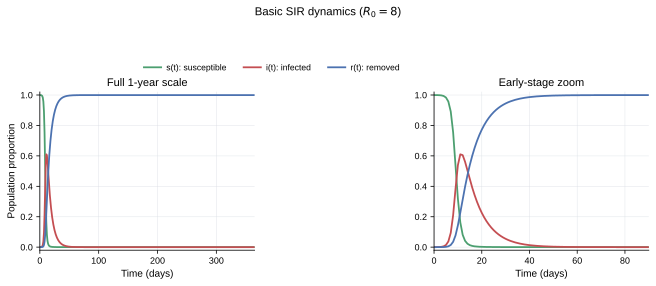
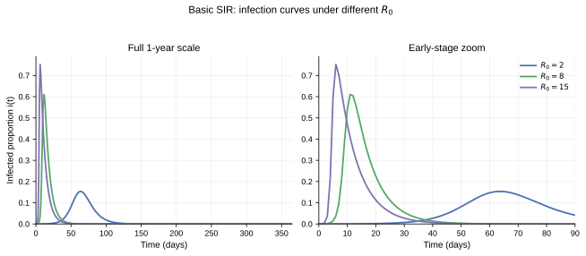
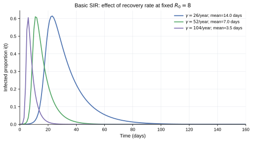
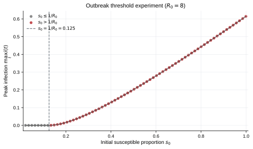
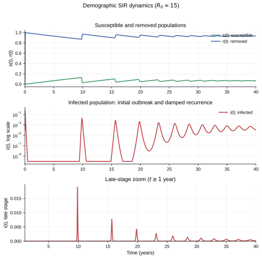
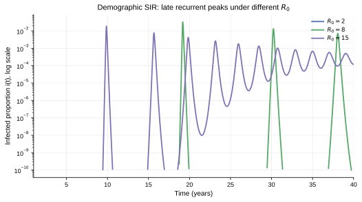
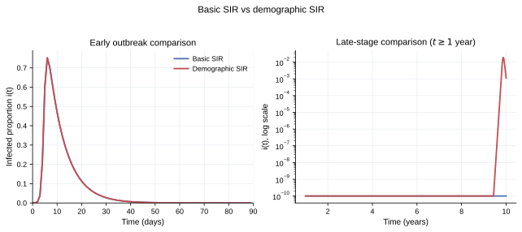
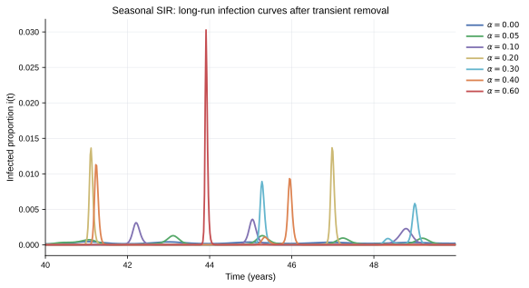
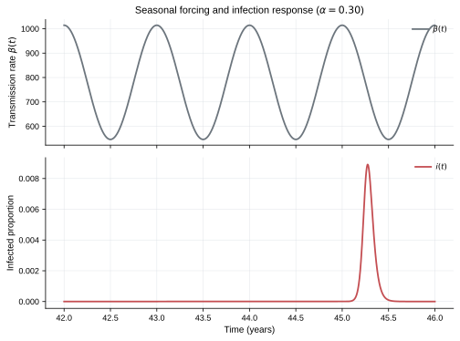
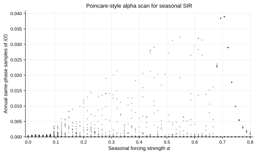
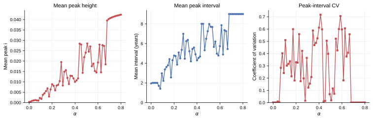
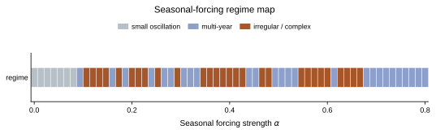
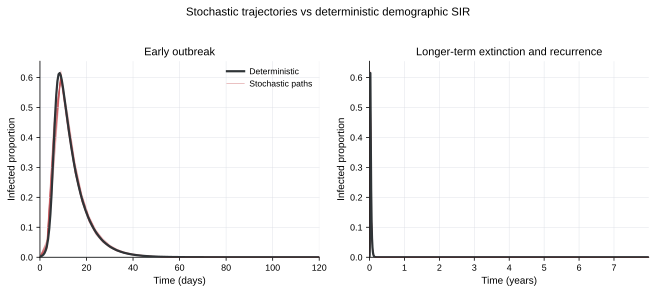
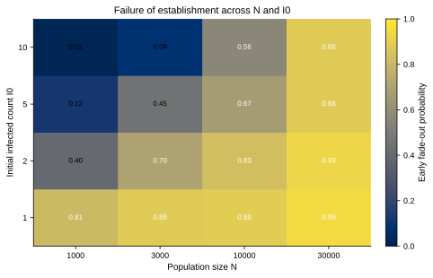
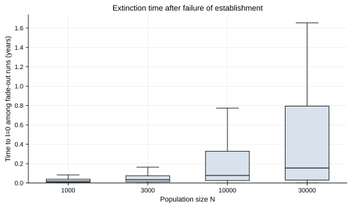
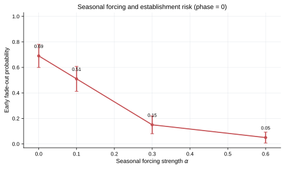
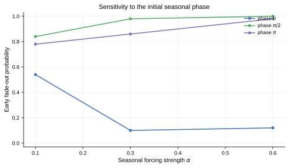